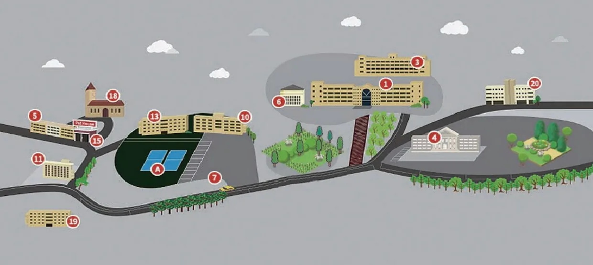

동아보건대학교 캠퍼스 영상 · 정문 진입로 → 본관(emart24) → 실습장 종합안내판
국제교류원 소개
외국인 유학생의 한국어 학습과 한국 생활을 함께합니다.
동아보건대학교 국제교류원은 한국어를 배우고자 하는 외국인 유학생을 위해 한국어과정 운영을 중심으로, 입학·등록부터 체류(비자)·보험·기숙사·생활 적응까지 유학생활 전반을 지원합니다. 베트남을 비롯한 여러 국가의 학생들이 캠퍼스에서 한국어와 한국 문화를 익히며 다음 단계를 준비합니다.
중심 과정
한국어과정(정규·단기)
대상
외국인 유학생
지원 범위
입학·체류·생활
안내 언어
한국어·베트남어
조직도
분야별 담당자가 입학·교육·생활·행정을 나누어 지원합니다.
원장
김보건
국제교류원장
담당
이서연
입학 담당
담당
박지호
한국어과정 담당
담당
최유진
유학생활·비자 담당
담당
정민수
행정 담당
오시는 길
동아보건대학교 국제교류원으로 찾아오시는 방법을 안내합니다.


주소
전라남도 영암군 학산면 영산로 76-57 (우 58439) 동아보건대학교 국제교류원
대중교통
KTX 나주역·광주송정역 등에서 자동차로 이동하실 수 있습니다. 시내·군내버스 노선과 소요시간은 방문 전 확인을 권장합니다.
주차
교내 방문자 주차장 이용 가능, 방문 시 정문 안내실에 문의
문의
전화 061-470-1700 (대표) / 홈페이지 www.duh.ac.kr
캠퍼스 배치도
캠퍼스 건물 배치와 번호를 안내합니다.

| 건물번호 | 구분 | 설명 |
|---|---|---|
| 1 | 본관동 | 대학행정부서, 교수연구실, 행정지원실, 사회복지전공 행정실, 이론·교양수업 강의실 |
| 3 | 3호관 | 간호학과 실습실 |
| 4 | 왕인관 | 도서관, 보건실, 간호학과 행정실 및 교수연구실, 유아교육과 전공·실습 강의실 |
| 5 | 낭주관 | 기숙사 식당, 여학생 기숙사 |
| 6 | 봉석관 | 학생식당, 법인, 대학 주요보직자 사무실 |
| 7 | 경비실 | 경비실 |
| 10 | 정무관 | 체력단련실, 무인택배보관함, 편의점 |
| 13 | 월출관 | 산학협력관, 교육연구 및 복지시설 |
| 15 | 기숙사열람실 | 기숙사 열람실 |
| 18 | 요한관 | 입학식·졸업식 및 행사용 강당 |
| 19 | 낭주신관 | 남학생 기숙사 |
| 20 | SN동 | 간호학과 이론수업, 교양수업 강의실 |
| A | 운동장 | 대학 운동장 |
| B | 레저조경 캡스톤 실습장 | 레저조경전공 캡스톤 실습장 |
| C | 레저조경 실습장 | 레저조경전공 실습장 |
통학버스 안내
목포 방면 무료 통학버스 2개 노선을 운행합니다. (1일 2대 · 등·하교 각 1회, 이용 현황에 따라 변경될 수 있음)
| 목포 ①호차 | 정차 위치 |
|---|---|
| 07:40 | 목포역 소화물 취급소 |
| 07:42 | 목포역 (권농사 농약사) |
| 07:44 | 1호광장 (가구백화점 앞) |
| 07:45 | (구)연동육교 (민 안경점) |
| 07:46 | 2호광장 (스쿨룩스교복 앞) |
| 07:48 | 3호광장 (목포우체국 주차장입구) |
| 07:50 | MBC 방송국 앞 |
| 07:51 | 알파문구 건너편 (버스승강장) |
| 07:57 | 담양숯불갈비 ((구)외환은행·Y마트 건너) |
| 07:58 | 부영아파트입구 (하당정형외과 건너편) |
| 07:59 | 한사랑동물병원 건너편 (맥도날드·유니클로 앞) |
| 08:00 | 항만청 (500번 정류장) |
| 08:10 | (구) 삼호터미널 |
| 도착 | 학교 |
| 목포 ②호차 | 정차 위치 |
|---|---|
| 07:45 | 목포터미널 건너 (시내버스 승강장 위) |
| 07:47 | E마트 건너 (삼성디지털프라자 앞) |
| 07:52 | 남악대로 법원 건너편 (LG전자 앞) |
| 07:55~56 | 도청 건너 도청프라자 (시내버스 승강장 위) |
| 07:57 | 아웃백 목포 남악점 앞 |
| 08:03 | 옥암 골드클래스 104동 앞 대로변 버스정류장 |
| 도착 | 학교 |
하교 버스는 전 노선 본교 운동장에서 17:30에 출발합니다. 운행 시간·정차 위치는 학사일정에 따라 변경될 수 있으니 국제교류원(061-470-1700)으로 확인하세요.